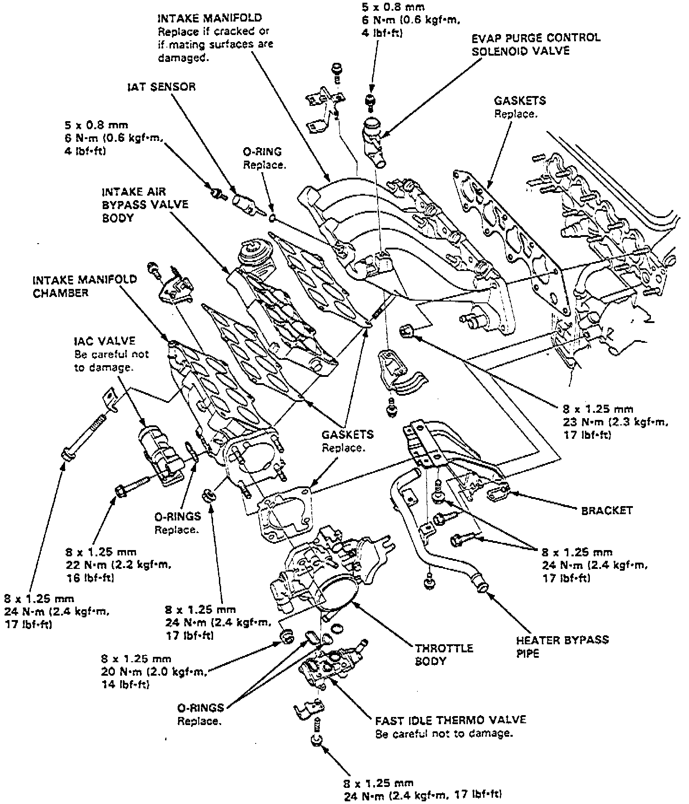

Intake Manifold: Service and Repair
Fig. 29 Intake Manifold Replacement:

Relieve fuel system pressure as described under Technician Safety Information, then refer to Fig. 29 when replacing intake manifold.
Cylinder Head Assembly
